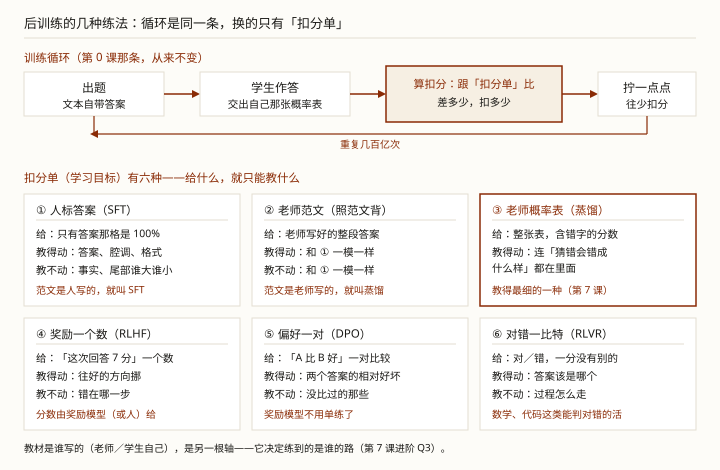

你可能早就听过「微调」，这两年又冒出 RLHF、DPO、GRPO……名字越听越多，好像每个都是新东西。其实它们是同一条训练循环。换的只有扣分单：拿什么当学习目标。
更要紧的是：很多人拿微调去「让模型变聪明」，测完很失望。那是因为微调本来就不负责变聪明。它教的是说话的样子和行为的规矩；聪明不聪明，是底子（预训练）早就定了的。
学完这课，你能听到任何练法的名字，立刻说出「它的扣分单是谁出的、教材谁写的、教得动什么」；自己选型时不把「灌知识」的活派给微调。
后训练不生产聪明，它决定「聪明怎么用出来」。所有练法共用一条循环，差别只有两个问题：扣分单是谁出的？教材是谁写的？
后面每一节都挂回它。
先把地基接上。LLM 底层第 0 课讲过，训练就是「出题、算扣分、往少扣分的方向拧一点点」，重复几百亿次。后训练还是这条循环，一个零件都没换。
换的是训练的目标。预训练练「会说话」：拿海量文本接着写，学到语言、世界知识和推理的底子。后训练练「听人话、按你的要求干活」：文风、格式、拒答口径、工具怎么调。它是给已经聪明的模型定行为，不是给不聪明的模型补智商。名字里的「后」说的就是顺序：底子练成之后的工序。循环没换，换的是出题的素材、规模和扣分单（五处差别逐条摆开）。
后训练的流派再多，也只是在回答两个问题：扣分单是谁出的（拿什么当学习目标）、教材是谁写的（练的是谁的答案）。

那么「扣分单」到底是什么？它是一道「判它答得对不对」的规则——拿什么当标准答案，就照着它算这一轮扣多少分。扣分总得对着一样东西算，那样东西就是扣分单。
但两类的「扣」法不一样。表格式是逐字对：它手里有每个字该得多少分，所以扣分能扣到字上——哪个字偏得多，哪个字挨的扣就重。预训练用的也是这个扣法，只不过标准答案换成了原文里紧跟着的那个字。一句话式是只看整段：打分器给整段回答打一个总分，它说不出「你第几个字错了」，所以这个分数只能整段摊到每个字头上，每个字收到的都是同一个方向、同一个劲。这就是「一句话式教得粗」的机制原因：不是学生笨，是信号里没有字一级的信息。
六种扣分单分两类，分界是它管到哪一层。表格式（人标答案、老师范文、老师概率表）管到每一个字：扣分单本身就是一张表，每个候选字各该给多少分都写着——人标答案那张是「答案 100%、别的全是 0%」，老师概率表是「晴 60%、雨 18%……」。
一句话式（奖励一个数、偏好一对、对错一比特）只管整段回答：看完只留一句总结，比如「这次 7 分」「A 比 B 好」「答对了」。拿批卷子打比方：表格式是逐字批改的老师，一句话式是只在卷尾写个总分的老师。哪一步走错了、哪个字给多了，它没说；没说的就不在教材里，学生自然学不到。
平时听到的三个名字（微调、蒸馏、RL）不是第三套分法，就落在这两类里：RL 用的是一句话式，扣分单是评价；微调和蒸馏用的都是表格式。所以微调和蒸馏其实是同一个练法（都是照着表练），分成两个名字只看扣分单是谁写的：人写的答案叫微调，老师给的东西（范文或概率表）叫蒸馏。动手环节里 ① 和 ② 逐位一模一样，说的就是这个。
下面动手环节把这六种放在同一道题上跑给你看。
最老牌的一种：监督微调（supervised fine-tuning，行话 SFT）——扣分单就是人写好的答案。练法朴素到一句话：照答案练，把模型的概率往答案上拧。
可「人写好的答案」是要写成一问一答的。它跟预训练不一样：预训练把一整段文本喂进去，人在旁边一个字都不用写；SFT 得有一条条「用户会怎么问 → 这时候该怎么答」。拿去训练的一份数据，摊开大致长这样：
{"messages": [
{"role": "system", "content": "你是公司 HR 助手，只依据制度回答，不承诺赔偿。"},
{"role": "user", "content": "年假怎么申请？"},
{"role": "assistant", "content": "在内网人事系统提交申请，直属主管审批，提前 3 个工作日。"}
]}这就是「人标答案」的全部含义——不是给每个字贴标签，是把「这种问题该怎么答」亲手写一遍。写几百到几千条，就够做一轮微调（对比预训练的千亿词，差着几个数量级）。
训练时按老规矩猜下一个字，但只给「回答」那一段算扣分。
它教得动什么？说话的样子、格式、行为的规矩。有个很能说明问题的实测：13 亿个数的小模型按人写的示范练过之后，它的输出比没练过的 1750 亿大模型更受人喜欢——参数少一百倍，「听话」这一维反而赢了（后训练到底拧动了多大一块）。
它教不太动什么？事实和推理。不是一分不动，是涨得少、涨得慢，还不可靠：问法一换就答飘，没记住的它照样编。有人做过这样一个实验：让 ChatGPT 把一批问题都答一遍，拿这些「问题＋ChatGPT 的回答」去微调开源小模型（范文是老师写的，所以这属于第 5 节那种蒸馏），再用另一批新问题考它。
结果分成两半。人来看是追上了：把学生的回答和 ChatGPT 的回答并排摆着盲选「哪个更好」，人觉得两者差不多。学生把老师的腔调学得很像：有结构、有分寸、像那么回事。机器来看两笔账都没长。拿同一批新问题里有标准答案的那些自动判对错（行话叫自动评测），学生跟它自己没微调之前比进步很小（论文试到 1.5 亿 token 的模仿数据，收益仍然有限），跟 ChatGPT 的差距更是几乎一点没缩，尤其是训练用的范文没怎么覆盖到的那些任务。人评分高，是因为模型「学得会腔调，学不会事实」。
还有个副作用要防：学新的，会退旧的。拿一批公司文档练完，模型答内部知识的分从 18 涨到 43——涨了，但还不到一半；照指令办事的本事（行话叫「指令跟随」）却从 85 分掉到 45 分，它把新学到的答法用到了所有场合上。
「拿微调教公司规章制度」这类需求，拆开看其实是两件事。一件是「怎么答」，说话的口径、格式、红线（回答先带免责声明、这类问题一律转人工、永远不承诺赔偿），这是行为，微调正对路。另一件是「答什么」，报销上限多少、产假多少天、流程第三步找谁批，这是事实条目，微调搬不动几个，制度一改还得重训。该放知识库（RAG）：问的时候查出来、带得出出处，改了立刻生效。
所以「我微调了，效果不好」通常不是方法坏了，而是活派错了。想灌知识，别用微调，用检索增强（RAG）或继续预训练；想改行为，微调正对路。内测不灵时先查哪几件事，写在附录 · 微调项目怎么不翻车。
微调的扣分单是「正确答案」。可很多活根本没有标准答案——「回答得有没有礼貌」「哪种说法更好」。RL 的共同点：扣分单不再是答案，是评价。评价有三种给法，对应三种练法：
| 先看总表 | 奖励一个数（RLHF） | 对错一比特（RLVR） | 偏好一对（DPO） |
|---|---|---|---|
| 答案怎么来 | 当场采几条 | 当场采几条 | 数据集里备好的答案对，不采样 |
| 分从哪来 | 奖励模型打一个分 | 程序自动判对错 | 数据里已经标好「哪条更好」 |
后两种当场就能写出答案、也当场就能打分；DPO 手上是现成的答案对——这是它跟另外两条最大的不同。
RLHF：四步。第一步，先让它写。同一道题让模型自己写好几条回答。训练工具默认一次采 8 条，论文里常见更大的组（一条不够用，看第二步就明白了）。第二步，每条给一个分。RLHF 这边要分两步备料：先让一批回答排个序，拿这些排序练出一个「奖励模型」；再让它来评判打分（这些活都在训练之前做完，奖励模型打错了会怎样）。第三步，把分变成方向。光有一个绝对分还动不了手，得知道「这条比别的强多少」，这一步要先有个对照线，怎么定它有两种办法，那两个名字就是 PPO 和 GRPO。GRPO 是跟自己这一组比：同一道题那几条的分减掉组内平均，比平均高就往上推、低就往下压。PPO 是另练一个网络来预测「照这个局面大概能拿多少分」，拿实得分减预测分当功劳。GRPO 省掉的就是那个预测网络，所以更省显存。第四步，把这个方向平摊到这条回答的每个字上。整段一起变：那条回答「整体该多写一点」或者「整体该少写一点」。没有哪个字被单独点过名。
对错一比特：也是这四步，只换一件事。第一步一样，让它自己写几条；第三步、第四步也一模一样（对照线照样可以用 PPO 或 GRPO）。不同的只有第二步的「分从哪来」：不用人排序、也不用奖励模型，程序自己判对错，所以最省事；前提是这活的对错能自动判（数学、代码）。有实测拿纯强化学习练推理、完全不用人写推理示范：在数学、编程竞赛这类能判对错的任务上，反而超过了照人工示范练出来的模型，还涌现出自我查验、回头重算这些习惯。「写得好不好」这种判不了的，用不了这招。
DPO：这条路的训练数据不是一段文本，而是一对回答。同一个问题配两条回答，还要标明哪条是人更喜欢的（这是在收数据的时候定好的：把两条摆一起让人挑一条）：
{"prompt": "年假怎么申请？",
"chosen": "在内网人事系统提交申请，直属主管审批，提前 3 个工作日。",
"rejected": "问一下你的主管吧。"}DPO 不用模型自己写答案，也没有「分」——「哪条更好」数据里已经标好了。
那它拿什么当方向？直接比概率。数据里那两句直接送进模型：送进 chosen 那句，读出「在刚才那个问题后面，这句话该长这样」的把握，逐字乘起来就是好答案的概率。rejected 同样送一遍，得到差答案的概率。训练的方向就是让好答案更可能、差答案更不可能：比的是「好答案的概率 ÷ 差答案的概率」，让这个比值变大。代价是只能学到相对好坏：没比过的那些，一个字没提。（到底该选 DPO 还是 RLHF）
还有一种扣分单不是人给的，是老师（大模型）给的。给法有两种：
什么时候轮到它：要让小模型顶大模型的活——省部署成本、跑本地、降延迟。流程通常是大模型先练好（可以是微调或 RL 练出来的），再把本事蒸给小模型。它和微调、RL 不是三选一：微调和 RL 决定老师有多强，蒸馏决定小模型能学到老师几成。细节都在LLM 底层第 7 课 · 蒸馏。
| 你想改什么 | 用哪一类 | 为什么 |
|---|---|---|
| 说话的样子、格式、工具调用格式、行为红线 | 监督微调（SFT） | 扣分单是答案，照着写就会了 |
| 主观偏好：礼貌、风格、哪句好 | RLHF ／ DPO | 没有标准答案，只有评价 |
| 推理能力：数学、代码 | 对错一比特（RLVR／GRPO） | 对错能自动判，信号又硬又便宜 |
| 小模型学大模型 | 蒸馏 | 老师的判断方式直接当教材 |
这些方法能混用吗？能。真实的项目本来就是串着用的。三种常见组合：
选完练法，还要把预期放对。后训练是接着预训练定行为的（第 1 节），这轮练完改得动什么、改不动什么，拿两个例子看：
你教它「先带免责声明」——练到的场景里它带上；没练到的场景，它退回微调之前的老样子（该带的不带、该转人工的不转），新教的规矩还可能用到不该用的地方（第 3 节那个 85→45 就是这么掉的）。你教它一批事实条目，练到的条目，答法会往你写的靠（事实能记住多少另说，第 3 节）；没练到的，它照底子上的老办法答。
所以：数据里教到的会被抬高，教不到的这次训练就改不动它——不是「不会」，是「没被教」。逐条的机制和清单见进阶版 Q7 · 这轮练完，改得动什么、改不动什么；练得又久又窄、把别处的本事也带歪，见窄领域猛练会不会把别处的本事练坏。
最后把六种练法摆在一起看。它们的差别，一半在「一条数据长什么样」，另一半在「扣分算在哪一段」：
| 练法 | 一条数据长什么样 | 扣分算在哪一段 |
|---|---|---|
| 预训练 | 一整段现成文本 | 整段每个位置都算 |
| 监督微调（SFT） | 问题 ＋ 人写的标准回答 | 只算回答那段，提问是题面 |
| 蒸馏 · 照范文背 | 问题 ＋ 老师写的回答 | 跟 SFT 逐位同一个动作 |
| 蒸馏 · 搬概率表 | 问题 ＋ 老师那张完整概率表 | 学生的表跟老师逐字比（六种里最细） |
| RLHF ／ 对错一比特 | 问题 ＋ 模型自己现写的回答 ＋ 打分器给的一个分 | 只算模型自己写的那段，整段共用一个分 |
| 偏好一对（DPO） | 同一个问题配两条回答（哪条更好） | 只算这两条；比「好那条的概率 ÷ 差那条的概率」 |
| 继续预训练 | 一整段你自己的料（制度、文档、代码） | 跟预训练同一套：整段每个位置都算——所以它教的是「这类文本接下来怎么写」，不是「用户问到时该怎么答」 |
规律就一条：挨扣的只有「要它学的输出」，提问只是题面。预训练之所以整段都算，是因为它没有独立的提问：题（前文）和答案（下一个字）本来就是从同一段文本里切出来的。
同一道题「明天什么天气」，同一个学生，同样的训练量，只换扣分单。学生的尾部排序一开始就是错的（它觉得「雨＞霜＞云＞风」，老师说「雨＞风＞云＞霜」）。谁能把尾部也教对，一眼看得出来。
跑法：python exercises/llm/0009-post-training-recipes.py
同一道题「明天什么天气」，同一个学生，同样的训练量。
练之前 晴 30.0% 雨 25.0% 风 10.0% 云 15.0% 霜 20.0% 尾部 雨＞霜＞云＞风（错的）
老师那张表 晴 60.0% 雨 18.0% 风 10.0% 云 7.0% 霜 5.0% 尾部 雨＞风＞云＞霜（目标）
============================================================================================
一、表格式扣分单：给的是一整张表，教得最细
============================================================================================
① 人标答案（SFT） 晴 100.0% 雨 0.0% 风 0.0% 云 0.0% 霜 0.0%
尾部 雨＞霜＞云＞风（要 雨＞风＞云＞霜 才算学到）→ 答案记住了；尾部全压成 0，谁大谁小再也没法说——不是排对排错，是没了
② 老师范文（照范文背） 晴 100.0% 雨 0.0% 风 0.0% 云 0.0% 霜 0.0%
尾部 雨＞霜＞云＞风（要 雨＞风＞云＞霜 才算学到）→ 和 ① 逐位一模一样：练法同一个，只换了范文的作者
③ 老师概率表（蒸馏） 晴 60.0% 雨 18.0% 风 10.0% 云 7.0% 霜 5.0%
尾部 雨＞风＞云＞霜（要 雨＞风＞云＞霜 才算学到）→ 答案学到了，连错的尾部也被老师掰正了：「猜错会错成什么样」整个搬了过来
============================================================================================
二、一句话式扣分单：只给一个数、或一句偏好，教得粗
============================================================================================
④ 奖励一个数（RLHF） 晴 90.6% 雨 3.3% 风 1.3% 云 2.0% 霜 2.7%
尾部 雨＞霜＞云＞风（要 雨＞风＞云＞霜 才算学到）→ 只知道「这次好」，往答案挪了一截；尾部谁大谁小它一个字没提，错的原样留着
⑤ 偏好一对（DPO） 晴 55.0% 雨 0.0% 风 10.0% 云 15.0% 霜 20.0%
尾部 霜＞云＞风＞雨（要 雨＞风＞云＞霜 才算学到）→ 只拉开「晴 vs 雨」，风云霜一动不动——扣分单里只有这一对的信息
============================================================================================
三、排个名（两个指标：第一名学到了吗、尾部跟老师对上了吗）
============================================================================================
教法 第一名 尾部对上老师 离老师多远
③ 老师概率表 60.0% 对上了 0.001
① 人标答案 100.0% 没对上 39.998
② 老师范文 100.0% 没对上 39.998
④ 奖励一个数 90.6% 没对上 30.621
⑤ 偏好一对 55.0% 没对上 23.000
[看输出三件事]
1) ① 和 ② 完全一样——「照答案练」就是「照答案练」，范文是人写的还是老师写的，
只改变它叫什么名字（SFT 还是蒸馏），不改变学出来的东西。
2) ③ 是唯一尾部对上老师的：扣分单给的是整张表，连「猜错会错成什么样」都在里面。
3) ④⑤ 的尾部还是错的：扣分单只给一个数、或一句偏好，那几个字的讲究根本不在教材里。
这就是「扣分单给一句话，就只能学个大概」——不是模型笨，是教材里没写。
最值得盯的是第 1 条：① 和 ② 学出来的东西逐位一样。范文是人写的还是老师写的，只改变这次训练叫「SFT」还是「蒸馏」。练法是同一个。想分清这两个名字，看第 7 课进阶 Q4。
上面这些够你看懂全貌了。读的过程中如果冒出疑问，点对应的链接就行——不用从头看进阶版。
Q1 「后训练」改的是模型的什么？
Q2 拿公司文档做监督微调，想让模型「记住」产品知识，为什么常常不灵？
Q3 RLHF 的「扣分单」是谁出的、给的是什么？
Q4 「对错一比特」这种扣分单，最适合哪类活？
前置：LLM 底层第 0 课 · 模型是怎么学出来的（那条「出题、算扣分、拧」的循环）· LLM 底层第 7 课 · 蒸馏（扣分单来自老师那一类）
顺着往下：第 7 课进阶 · Q4 蒸馏和监督微调的分界（范文是谁写的才作数）
其它轨道：Agent 评估检查单（练完得测）
这条轨道：课程目录
术语表：监督微调 SFT · RLHF / DPO / GRPO · 蒸馏 distillation · 预训练 / 后训练